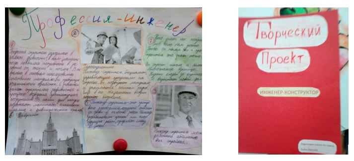
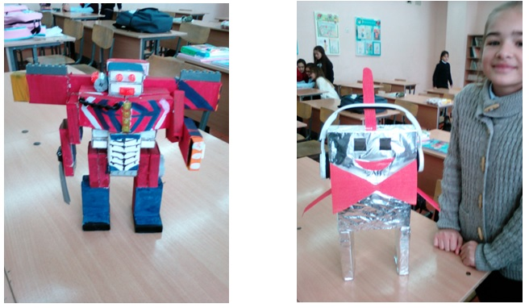
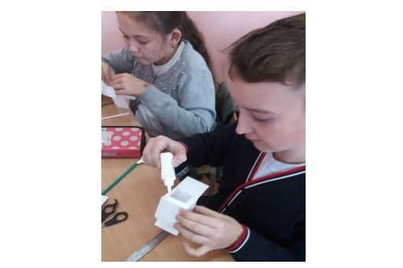
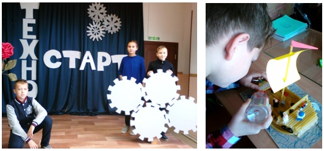
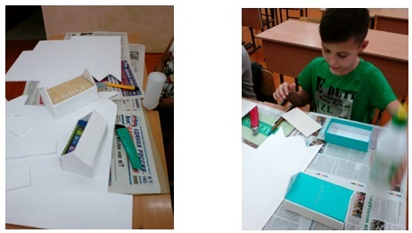
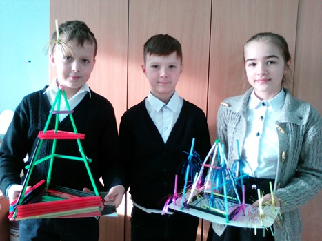
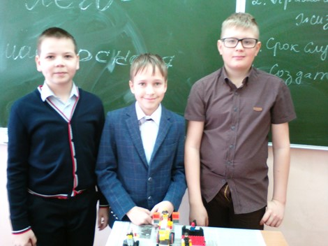
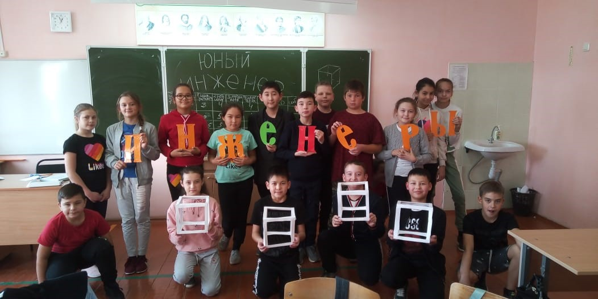

«…одна из задач общеобразовательной школы – помощь детям в осознанном выборе будущей профессии, соответствующей запросам отечественной экономики».
Как решить вопрос современному сельскому школьнику «Кем стать?» и как выбрать будущую профессию. Эффективным методом подготовки и самоопределения является ранняя профориентация.
Профориентация (профориентация, выбор профессии, ориентация на профессию, профессиональное самоопределение) – это комплекс действий для выявления у человека склонностей и талантов к определённым видам профессиональной деятельности, а также система действий, направленных на помощь в выборе карьерного пути людям всех возрастов.
Понятие профориентации появилось в результате слияния двух слов из разных языков: латинского profession (род занятий) и французского orientation (установка).
Цель профориентации–не только профессиональное, но и личностное самоопределение. Выбирая профессию, человек выбирает не только работу, но и дальнейшую судьбу. Поэтому очень важно создать все условия для того, чтобы подрастающее поколение осознанно и заинтересованно подходило к вопросу выбора будущей профессии.
В ВУЗах России сегодня не более 20% студентов обучается по инженерно-техническим и естественно-научным специальностям (исключая архитектуру), 70% из них после окончания ВУЗа не будут работать по полученной специальности. 29% российских предприятий сообщают об имеющемся дефиците инженерно-технических кадров, который на сегодняшний день составляет более 2 миллионов специалистов. Выбор технической специальности не является приоритетом на этапе ранней профессиональной ориентации, так как не воспитывают интерес к инженерному творчеству.
В связи с этим на базе МАОУ СОШ с.Бурибай были сформированы инженерные классы и началась трудоемкая последовательная работа в этом направлении.
В результате реализации инженерного проекта ожидается: - знакомство детей школьного возраста с инженерными специальностями с привлечением специалистов в разных сферах. - вовлечение детей в инженерное творчество с помощью современных информационных технологий и технических ресурсов, путем проведения мастер-классов. - формирование мотивации на изучение профильных предметов. - моделирование образа Инженера - как престижной и востребованной профессии ХХI века - выявление и сопровождение детей заинтересованных в инженерном деле в целях последующего поступления в профильные образовательные учреждения.
Название « инженер» происходит от латинского «ingenium» и переводится, как «способный изобретать». Основное направление деятельности этих специалистов – разработка новейших инженерных решений или усовершенствование уже существующих. Первые инженеры занимались проектной разработкой и производством военных машин.
В России люди, имеющие данную профессию, появились только в 17 веке, благодаря Петру Первому, отправлявшему молодых людей получать образование за пределами страны. В то время их задачи заключались в построении военной техники и ее эксплуатации, а также в строительстве дорог, воздвижении мостов, зданий и сооружений.
Сегодня профессия инженер включает в себя большой комплекс всевозможных специальностей. Она получила широкое распространение и популярность во всем мире. Продукты питания, электроника, различные механические приборы, которые современный человек использует в повседневносли школьник задумывается о карьере инженера, то он должен начать подготовку к выбранной профессии еще до поступления в любой ВУЗ. Ему следует заняться углубленным изучением точных наук, которые наиболее важны для данной специальности: математика; физика и химия; информатика; инженерная графика и начертательная геометрия.
Уже с пятого класса в нашей школе учащиеся начинают изучение графики, введение в химию, физики. Принимают участие в различных кружках. Все занятия предполагают постепенную профориентационную работу в области инженерно-технических профессий.
Такая последовательная ранняя профориентационная работа среди обучающихся, поможет ученику в выборе будущей профессии и обеспечит поступаемость в технические Вузы.
Рассмотрим некоторые этапы ранней профориентации школьников инженерных классов на уроках изобразительного искусства и внеурочной деятельности.
Вовлечение учеников в научно-техническое творчество посредством уроков изобразительного искусства и внеурочных занятий начинаю со знакомства с профессией «Инженер». Профессия «Инженер» многогранная и технически разносторонняя. Сейчас нет просто инженеров есть инженеры—системщики, инженеры—конструкторы, технологи, дизайнеры и т.д А для того, чтобы учащиеся знали, кто такой инженер, какие бывают инженеры и какими качествами должен обладать, детям предлагаю выполнить творческие проекты, различные выставки рисунков, такие как «Профессия инженер в моем рисунке», «Хочу стать инженером» и знакомятся с разновидностями инженерных профессий. Творческие проекты выполняют в любой форме: рисованная книга, плакат, книжка-малышка,3д- модуль, портфолио и т.д Ученики выступают перед классом, рассказывая о той или иной инженерной профессии в интересной форме. (см. Приложение 1)
Самым интересным в приобщении к инженерии являются инженерные проекты «Башня» , «Юный инженер» и «Лего-мастерская». В проекте «Башня» учащихся делю на группы по 5 человек. Цель работы групп: создать башню из трубочек для сока. При этом они могут использовать скотч, пластилин, клей «Момент», нитки. Условиями успешного создания башни является устойчивость, эстетичность, высота и защита проекта. В защиту проекта входит название башни, создатели, срок службы и практичность, ответы на вопросы других групп. Учащиеся при выполнении такого проекта так входят в образ инженеров-конструкторов, что продолжается такая интересная творческая дискуссия.
В проекте «Лего-мастерская» дети работают с конструктором лего. Выполняют работы на тему «Умный дом», «Необычная техника», «Неизведанный космос» и т.д.
В проекте «Юный инженер» ученики учатся моделировать большие кубы, работать в команде и решать инженерные задачи.(см. Приложение 2)

В 5 классе внутри класса провожу конкурс «Мой робот». Роботов ученики стараются создать из любого материала. Затем вместе с классом самые лучшие и удачные роботы. (см. Приложение 3)
Конкурс внутри класса «Мой робот»
Также с интересом дети погружаются в профессию инженера в деловой игре «Юный инженер», решают всевозможные ситуации, придумывают «умные» изобретения, например, умная плита от сгорания блюд, умный аквариум, умный хозяин, умный автомобиль, моделируют.(см. Приложение 4)
«Юный инженер»
Такой творческий подход развивает многие качества у современного ученика, которые необходимы будущим инженерам и можно раньше выявить и развить индивидуальные склонности и таланты каждого из наших учеников.
Школьники регулярно принимают участие в различных творческих конкурсах ,научно-практических конференциях и олимпиадах.. Такие как техностарт, город Мастеров, Моя мала родина, Кубок Гагарина и т.д.(см. Приложение 5)
Районный технический конкурс «Техностар»
Учащиеся инженерных классов уже в школе готовятся к научно-исследовательской деятельности, к будущей работе по инженерной специальности. Самое главное, что они смогут на уроках и внеурочной деятельности что-то придумать и сконструировать своими руками.
Воспитанию личности творца, способного осуществлять свои творческие замыслы в области технического творчества и моделирования мне помогают занятия во внеурочное время. Учащиеся во внеурочных занятиях раскрывают совсем неожиданные творческие качества, которые необходимо поддержать и развивать.Так, например, на занятиях «Техническое моделирование», «Юный чертежник» ученики учатся чертить чертежи, проектировать, рисовать эскизы создавать макеты домов, техники и т.д. Ведь для того, чтобы получился макет они сначала разрабатывают эскиз или чертеж. Только потом начинают создавать задуманное . При такой кропотливой работе получается полное погружение в профессию как инженера, так и других профессий .(см. Приложение 6).
На внеурочном занятии «Техническое моделирование»
Наблюдения и анкетирования инженерных классов в нашей школе показали, что одним из основных интересных предметов у учеников являются изобразительное искусство и графика. А эти предметы играют немаловажную роль в становлении будущего инженера.
Положительное отношение детей к проведению различных мероприятий и конкурсов мы можем увидеть, прочитав их отзывы.(см Приложение 7)
«Мне очень нравятся уроки изобразительного искусства и графики, т.к мы играем в командах, конструируем, обсуждаем, защищаем свои работы»
«Я очень доволен проведенными мероприятиями инженерного направления! Узнаем много нового, учимся работать в группах, но, главное, на занятиях стоит такая творческая, радостная и душевная атмосфера.»
«Юлия Рафаиловна очень грамотный, творческий и инициативный педагог, глубоко знающий свой предмет и увлекающий им своих учеников.»
Положительными результатами профориентационной работы в техническом и творческом направлении являются стабильные достижения моих учеников в технических олимпиадах, конкурсов, большой процент выбора технических Ввузов, но а самое главное осознанный выбор и направление будущей профессии.
Таким образом, ранняя профориентационная работа на моих уроках изобразительного искусства и занятиях внеурочной деятельности со школьниками позволяет выявить наиболее талантливых и перспективных учеников в инженерном направлении. Но при этом профориентационная работа в техническом направлении зависит не только от учителя, но и от заинтересованности детей, их мотивации, интереса к исследованию, к проектированию. Необходимо, чтобы у ребят был интерес именно к такой деятельности – что-то творить и создавать. Тогда мы сможем подготовить высококвалифицированного инженера, у которых есть будущее.
Ссылки на источники 1. Из послания президента Р.Ф. Путина В.В. 2.См.: «О внесении изменений в Федеральный закон «О науке и государственной научно-технической политике»// Федеральный закон от 21.07.2011 No254-ФЗ; «О долгосрочной государственной экономической политике» // Указ Президента Российской Федерации от 07.05.2012No596. О концепции доктрины подготовки инженерных кадров в России. –М.: Издание Государственной Думы, 2012 3. Дмитриев А.Д. «Актуальные проблемы подготовки и трудоустройства кадров инженерно-технического профиля в Российской Федерации» 4.https://www.ladyandcity.ru/
Инженерный проект «Башня»
«Лего-мастерская»
